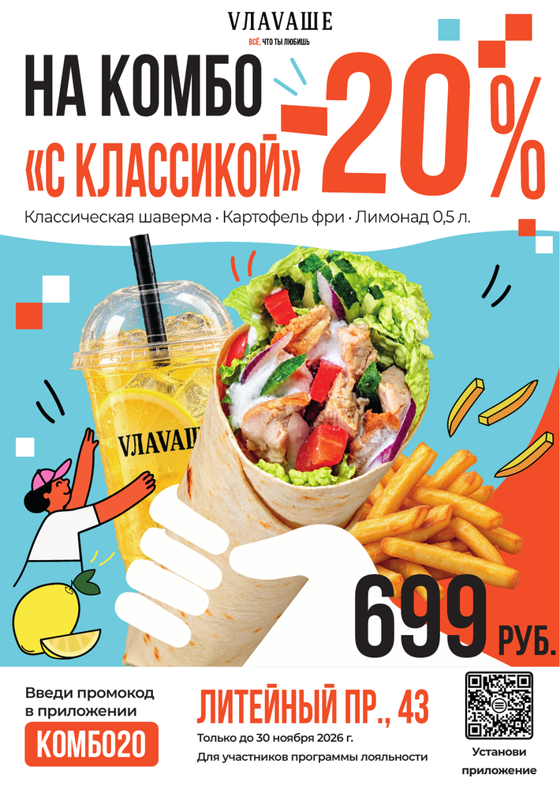
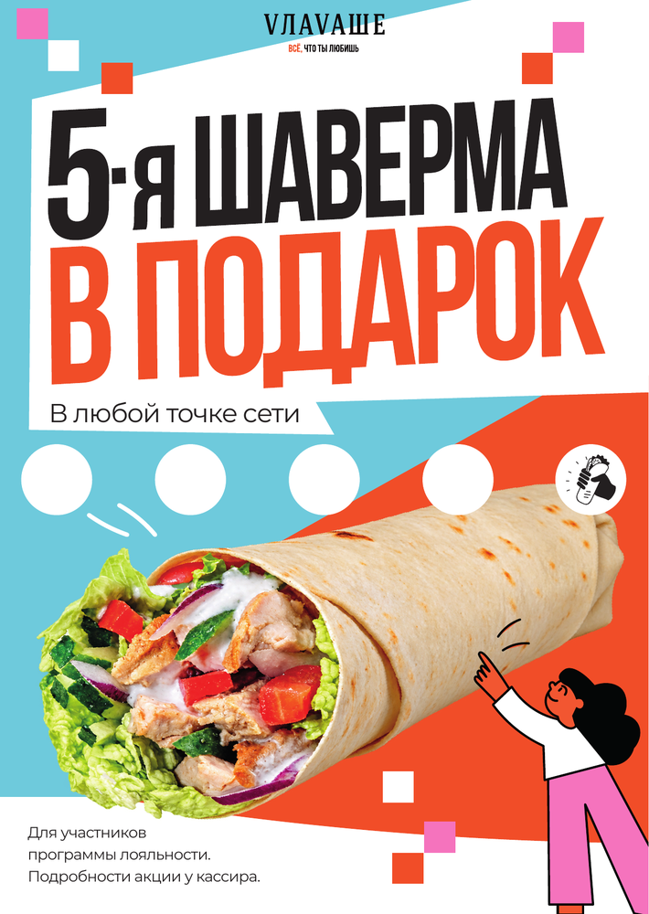
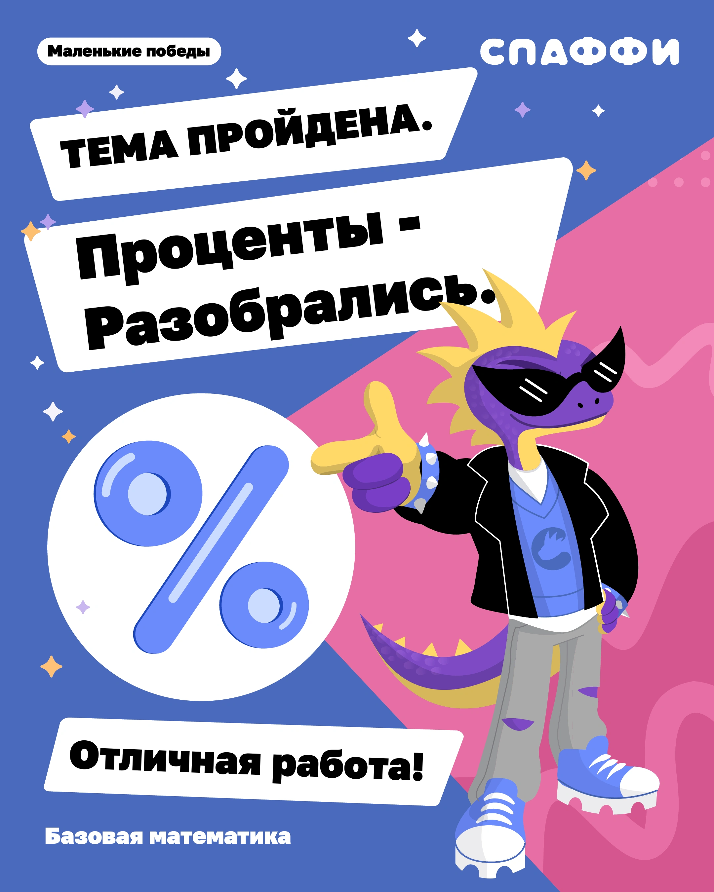

Графический дизайн
Вёрстка зимнего меню J’PAN, буклет для «Влаваше», макет для Instagram Spaffy и карточка товара для Ozon.
- Проект
- J’PAN, Влаваше, Spaffy, личный проект
- Моя работа
- Вёрстка и типографика
- Носитель
- Печатные и цифровые макеты
J’PAN
Вёрстка внутренних страниц зимнего меню J’PAN 2025 года: разделы с блюдами и напитками.


Влаваше
Двусторонний буклет А6 для промоутеров «Влаваше». На лицевой стороне — предложение комбо, на обороте — акция с пятой шавермой в подарок.


Spaffy
Макет для карусели Instagram о завершении темы «Проценты». Формат — 1080 × 1350 px.

PS 5 Dualsense
Карточка товара для Ozon с инфографикой о геймпаде DualSense.